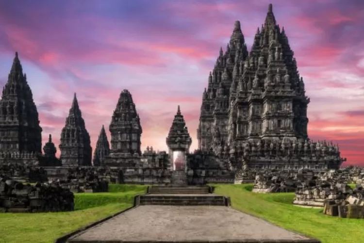
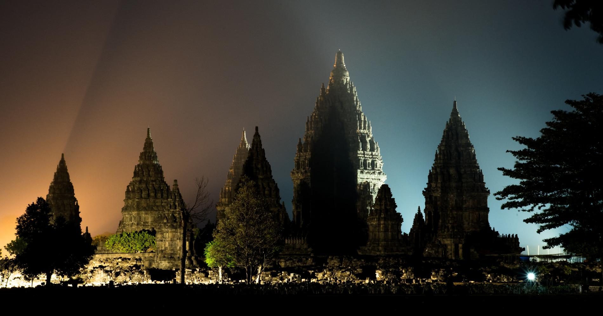
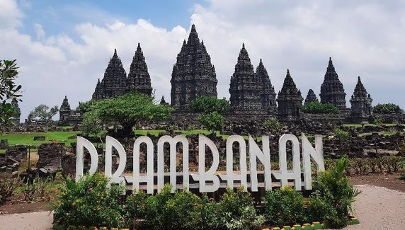

Candi Prambanan adalah bangunan candi bercorak agama hindu terbesar di Indonesia yang dibangun pada abad ke-9 Masehi. sekaligus salah satu candi terindah di Asia Tenggara. Arsitektur bangunan ini berbentuk tinggi dan ramping sesuai dengan arsitektur Hindu pada umumnya dengan candi Siwa sebagai candi utama memiliki ketinggian mencapai 47 meter menjulang di tengah kompleks gugusan candi-candi yang lebih kecil.
Kisah Candi Prambanan yang paling terkenal adalah legenda Roro Jonggrang dan Bandung Bondowoso. Legenda ini menceritakan bahwa Roro Jonggrang, putri Prabu Baka, menantang Bandung Bondowoso untuk membangun seribu candi dalam satu malam sebagai syarat untuk menikahinya. Bandung Bondowoso, yang memiliki kekuatan gaib, menyanggupi tantangan tersebut dan berhasil membangun 999 candi dalam waktu yang singkat. Namun, Roro Jonggrang, dengan bantuan warga desa, berhasil membuat matahari terbit sebelum candi ke-1000 selesai dibangun, sehingga Bandung Bondowoso marah dan mengutuk Roro Jonggrang menjadi arca.
 